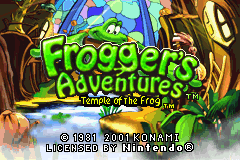

Frogger's Adventures - Temple of the Frog (USA) (En,Fr,De,Es,It)
EEPROM 4K
Cartridge Identity
- Game Code
AFRE(FamilyAFR)- Header Title
FROG: TEMPLE- Maker / Revision
A4/ rev0- ROM Size
- 4.0 MiB (4,194,304 B)
- Save Media
EEPROM 4K- SHA-256
2dac7cdf9821c7ef672b5700f0114cf8bbe46bd019f85b97478e4c9a937637c5- Engine / SDK Group
comm-004(98 families)
Screenshots


Observed Battery Save Layout
- Fill Byte & Active Size
0xFFfill · 8–8 / 512 B active (entropy 1.50 bits/B)- Active Offset Ranges
0x0–0x7(1 total)- ASCII Magic / Headers
- None detected
- Observed Variable Regions
- 0 bytes across 0 spans: None
- Candidate Checksum/Counter Spans
- None
ROM Assets, Compression & Audio
- BIOS Compression
- LZ77 (
0x10): 49 streams · RLE (0x30): 0 streams - ROM Pointer Tables
- 44 tables (1 pointing to validated compressed streams)
- SDK Backup Tags
EEPROM_V121
Hardware MMIO Subsystems
irq_control0x8035d84ppu_display0x8000430,0x800e85c,0x800eb1c,0x800ee34,0x800ee94,0x800ef90